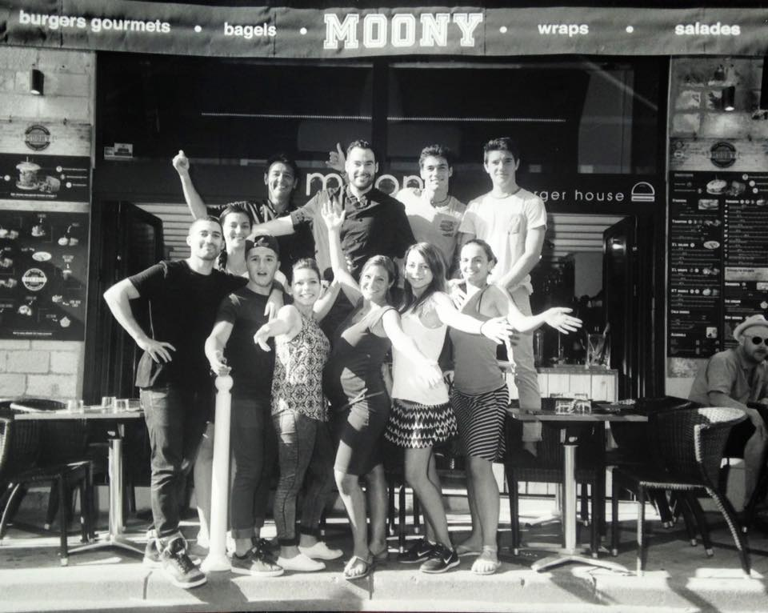
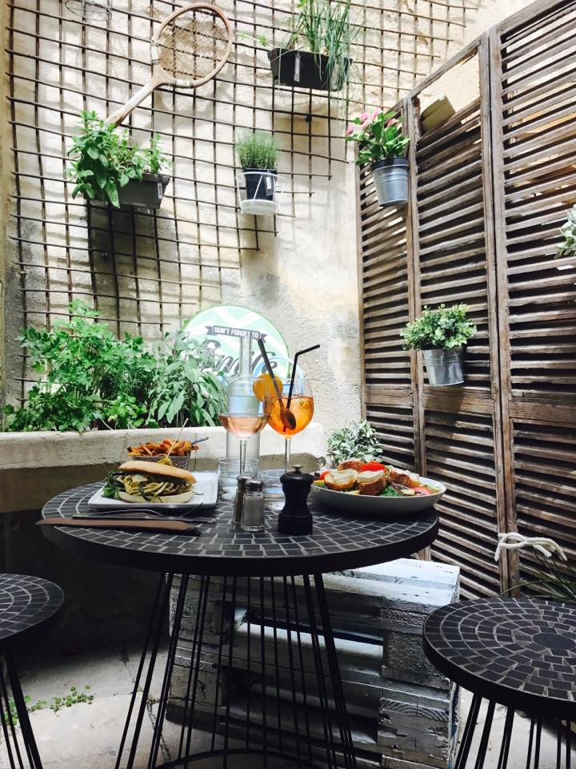

Notre Concept
Moony c'est l'aventure de 2 gourmands: un frère passionné depuis toujours par la cuisine de son sud-ouest natal... et une soeur qui a parcouru le monde pour goûter aux différentes saveurs de 60 pays. En alliant leurs expériences culinaires et internationales ils donnent naissance à un concept unique.
Au Moony on propose chaque jour de nouveaux plats frais (pièce du boucher, poisson frais, plats végés), des tapas et assiettes du marché et on revisite les incontournables internationaux (burgers gourmets, wok végétariens, brunch, cafés cocktails, cocktails new yorkais) avec des recettes 100% fait maison et des produits régionaux.
Au soleil en terrasse place st michel, à l'ombre d'un parasol dans le patio privé, dans une ambiance « sports bar » retranscrite par la diffusion des matchs en direct et une déco intégrant des équipements sportifs authentiques, le Moony une brasserie nouvelle génération ouverte tous les jours, toute l’année (en service continu l'été) sur place, ou à emporter.
Le Moony a le plaisir d’accueillir des clients dynamiques, sportifs, voyageurs, au sein de son restaurant. Il est également possible d'organiser des événements pour les groupes, adaptés aux associations sportives, comités d'entreprises ou à quiconque souhaitant célébrer un anniversaire ou tout autre moment de vie dans un espace agréable où règne chaleur et convivialité.